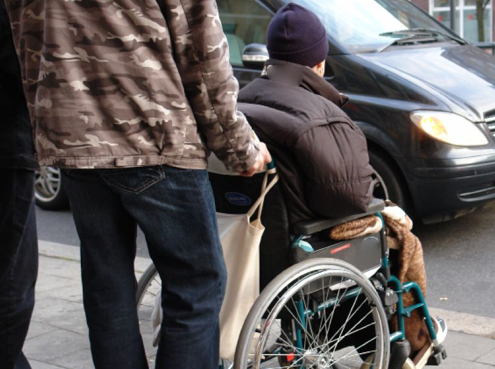

Do Good, Feel Good
The Benefits of Altruism
Anh Duong
Spring 2008

Do you turn away from the old beggar on the street corner? Do you
intentionally avoid helping classmates? Or do you smile and take the
time to help the elderly cross the street or donate to charity? Perhaps
next time, you should think twice and spare some change for the
homeless man. Recent studies have shown that there are strong
psychological and biological associations between altruism, happiness,
and good health – and the results heavily favor the good Samaritans.
As defined by Robert L. Trivers, PhD, Rutgers
University, altruism is a “behavior that benefits another organism, not
closely related, while being apparently detrimental to the organism
performing the behavior, [with] benefits and detriment being defined in
terms of contribution to inclusive fitness.” In humans, altruism is
defined as the unselfish act of directly helping others or showing
concern for others’ welfare.
It is baffling that humans often assist strangers,
especially when there are no apparent or immediate benefits for the
person performing the act. After all, helping a friend study for
another class only detracts from one’s own study time, and giving the
homeless man two dollars might keep you from buying coffee the next
morning. Clearly, these kind acts hinder us in some way. Why, then, do
we perform them?
To understand the full effects of altruism, we must
first examine how altruistic behavior originated and developed.
Jennifer Goetz, a PhD candidate at the University of California,
Berkeley, who works with Dacher Keltner, PhD, points to three major
evolutionary theories that provide insight into how compassion serves
to benefit an individual: kin selection, group selection, and
reciprocal altruism. “First, kin selection suggests that you should
feel more compassion for your close family members. This is probably
how compassion response originated – in response to protecting
offspring over an extended childhood.”
Second, group selection theory can be traced back to
Darwin’s Descent of Man, in which he argues that “compassion will have
been increased through natural selection; for those communities, which
include the greatest number of the most sympathetic members, would
flourish best, and rear the greatest number of offspring.” This theory
demonstrates that compassion and altruism can promote the prosperity of
larger groups because members increase group safety and well-being for
one another. Finally, according to Goetz, “reciprocal altruism suggests
that you should feel more compassion for those who you like...and who
seem like they’d reciprocate in the future.” There has been enormous
support for this last theory.
German researchers Ernst Fehr, PhD, University of
Zurich, and Bettina Rockenbach, PhD, University of Erfurt, have studied
both the neurological and evolutionary aspects of human altruism, and
their findings show that continued altruism has evolved from the
stability of strong reciprocity – not merely from other individuals,
but from within the brain itself. The researchers took functional
magnetic resonance imaging (fMRI) scans of brain activity during the
simulation of a simple game meant to elicit selfish behavior or mutual
cooperation. They concluded that when players agreed to mutually help
each other, the brain’s reward circuit yielded strong positive
activation, or a “feel good” response. This pleasant physical and
mental reward, Fehr and Rockenback contend, drove the evolutionary
development of altruism. Conversely, an act of selfishness activated
the part of the brain responsible for negative emotional states such as
disgust, pain, hunger, and thirst. This provides biological and
empirical evidence for a mechanism that regulates altruism.